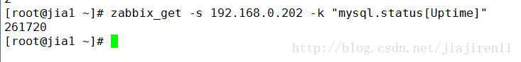

Zabbix自定义key监控mysql
zabbix agent 端：
先写好获得所监控数据的脚本/etc/zabbix/scripts/checkmysql.sh
权限要注意。
MYSQL_SOCK=”/var/lib/mysql/mysql.sock” #mysql的socket文件位置
MYSQL_PWD=123 #你的mysql的root密码 也可以单独创建mysql用户用来监控需要修改下边的用户
echo “Please input onearguement:”
result=`mysqladmin -u root -p${MYSQL_PWD} -S $MYSQL_SOCK status|cut -f2 -d”:”|cut -f1 -d”T”`
result=`mysqladmin -uroot -p${MYSQL_PWD} -S $MYSQL_SOCK extended-status |grep -w “Com_update”|cut -d”|” -f3`
result=`mysqladmin -uroot -p${MYSQL_PWD} -S $MYSQL_SOCK status |cut -f5 -d”:”|cut -f1 -d”O”`
result=`mysqladmin -uroot -p${MYSQL_PWD} -S $MYSQL_SOCK extended-status |grep -w “Com_select”|cut -d”|” -f3`
result=`mysqladmin -uroot -p${MYSQL_PWD} -S $MYSQL_SOCK extended-status |grep -w “Com_rollback”|cut -d”|” -f3`
result=`mysqladmin -uroot -p${MYSQL_PWD} -S $MYSQL_SOCK status|cut -f4 -d”:”|cut -f1 -d”S”`
result=`mysqladmin -uroot -p${MYSQL_PWD} -S $MYSQL_SOCK extended-status |grep -w “Com_insert”|cut -d”|” -f3`
result=`mysqladmin -uroot -p${MYSQL_PWD} -S $MYSQL_SOCK extended-status |grep -w “Com_delete”|cut -d”|” -f3`
result=`mysqladmin -uroot -p${MYSQL_PWD} -S $MYSQL_SOCK extended-status |grep -w “Com_commit”|cut -d”|” -f3`
result=`mysqladmin -uroot -p${MYSQL_PWD} -S $MYSQL_SOCK extended-status |grep -w “Bytes_sent”|cut -d”|” -f3`
result=`mysqladmin -uroot -p${MYSQL_PWD} -S $MYSQL_SOCK extended-status |grep -w “Bytes_received” |cut -d”|” -f3`
result=`mysqladmin -uroot -p${MYSQL_PWD} -S $MYSQL_SOCK extended-status |grep -w “Com_begin”|cut -d”|” -f3`
echo”Usage:$0(Uptime|Com_update|Slow_queries|Com_select|Com_rollback|Questions)”
然后修改/etc/zabbix/zabbix_agent.conf
UserParameter=mysql.ping,HOME=/var/lib/zabbixmysqladmin ping | grep -c alive
UserParameter=mysql.version,mysql -V
UserParameter=mysql.status[*],/etc/zabbix/scripts/checkmysql.sh $1 $2
重启zabbix-agent
zabbix server 端：
先使用zabbix_get 测试是否能够成功获取数据：

然后在网页上进行zabbix的配置。可以创建模板


模板设置好之后应用到主机上就可以看到最新数据

如果有灰色的不生效的。而你又确保正确。可以把那一项删掉重新做一次就正常了
可以设置图形查看图形。这里以其他的图形为例。

之后就是配置触发器和动作了。最好一并配置到模板中。
END
BY 贾己人